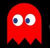
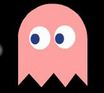

Pac-Man est un jeu vidéo culte créé par Namco en 1980. Il a été conçu par Toru Iwatani et a été initialement publié au Japon sous le nom de Puck Man. Le jeu a rapidement gagné en popularité et est devenu l'un des premiers succès mondiaux de l'histoire des jeux vidéo. Il a été adapté pour de nombreuses plateformes différentes au fil des ans, de l'arcade aux consoles de salon en passant par les appareils mobiles. Le concept de base de Pac-Man est simple : diriger un petit personnage rond à travers un labyrinthe en mangeant des pac-gommes tout en évitant les fantômes. Ce qui a rendu le jeu si populaire, c'est sa combinaison de gameplay simple mais addictif et de personnages mémorables. Pac-Man est devenu un symbole culturel, représentant non seulement les jeux vidéo mais également les années 80 en général. Il est encore considéré comme l'un des jeux vidéo les plus importants de tous les temps et continue d'être apprécié par les générations actuelles de joueurs.


Jouer à Pac-Man est une combinaison d'agilité mentale et de stratégie bien réfléchie. Pour exceller dans ce jeu d'arcade classique et maximiser votre score, une compréhension approfondie des comportements des fantômes - Blinky, Pinky, Inky, et Clyde - est cruciale. Comme décrit ci-dessus, chacun de ces fantômes a une personnalité unique qui influence leur mouvement dans le labyrinthe. Une stratégie éprouvée consiste à cibler en priorité les coins du labyrinthe, où se trouvent les grosses pac-gommes qui, lorsqu'elles sont consommées, rendent les fantômes vulnérables. Profitez de cette opportunité pour éliminer autant de fantômes que possible et augmenter votre score. Les tunnels présents sur les côtés du labyrinthe sont également des éléments clés à utiliser à votre avantage, car ils ralentissent les fantômes et offrent une évasion rapide en cas de danger. Planifiez toujours vos mouvements à l'avance pour éviter de vous retrouver coincé dans des impasses, et avec de la pratique, vous développerez des tactiques avancées pour naviguer habilement à travers les niveaux de Pac-Man et atteindre des scores élevés. En intégrant ces conseils stratégiques dans votre jeu, vous êtes bien parti pour devenir un maître de Pac-Man.
Le jeu d'arcade Pac-Man est composé de 256 niveaux, un bug dans le jeu original rend le niveau 256 pratiquement injouable, créant une boucle infinie. Le système de points du jeu est basé sur les éléments que Pac-Man consomme : une pac-gomme rapporte 10 points, une grosse pac-gomme 50 points, et les fantômes, lorsqu'ils sont vulnérables après que Pac-Man ait consommé une grosse pac-gomme, peuvent rapporter de 200 à 1 600 points chacun, selon le nombre consécutif de fantômes consommés. Des fruits apparaissent également au centre du labyrinthe, offrant des points bonus allant de 100 à 5 000 points. Le score maximal atteignable est de 3 333 360 points, réalisé en consommant chaque élément possible dans les 255 premiers niveaux sans perdre de vie. Bien que le jeu n'ait pas de limite de temps par niveau, la difficulté augmente progressivement, rendant chaque étape du jeu plus exigeante.
Entrez dans le Labyrinthe de Pac-Man : Préparez-vous à revivre l'excitation du classique intemporel avec notre vidéo de démonstration de Pac-Man. Cette vidéo vous guidera à travers les labyrinthes colorés, vous montrant comment esquiver les fantômes, collecter des points et atteindre des scores élevés. Idéale pour les joueurs de tous âges, cette démonstration offre des astuces et des stratégies pour naviguer dans le jeu, que vous soyez un débutant découvrant le jeu pour la première fois ou un joueur aguerri cherchant à perfectionner votre technique. Regardez et apprenez comment maîtriser ce jeu d'arcade légendaire, devenant ainsi le maître incontesté des labyrinthes de Pac-Man. Bon visionnage et amusez-vous à battre les records sur notre plateforme !
Retour à l'accueil